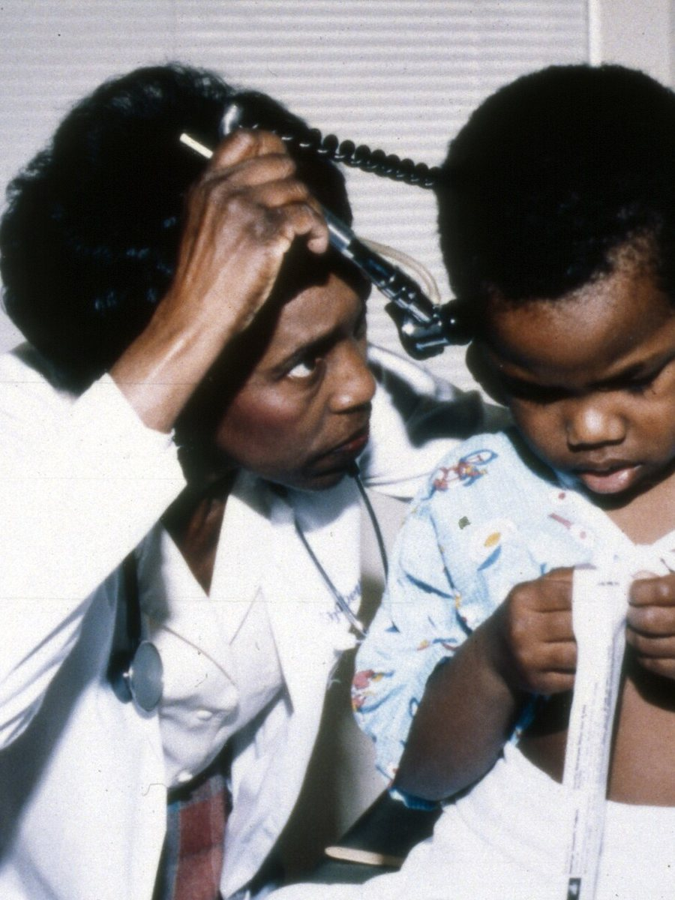
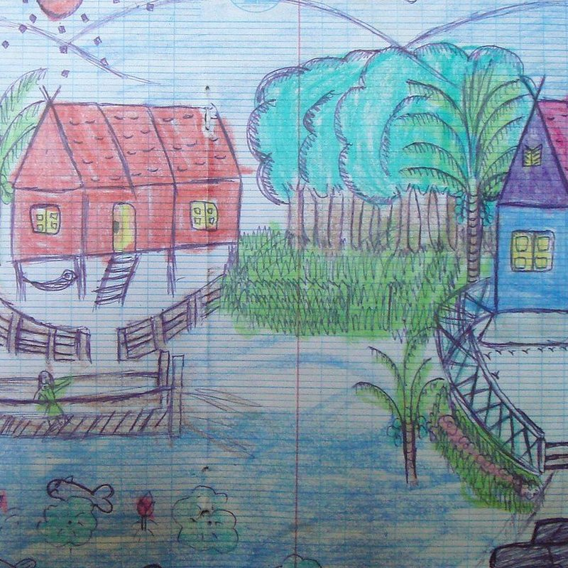

ладошка
Детская клиника в Уфе. Приём по записи, без очередей, с рождения до 18 лет.
Как проходит приём
Всё занимает один день. Записываетесь в два касания, приходите ко времени, врач не торопится.
Сегодня
- Выбираете врача и время2 мин
- Оставляете телефон1 мин
В день приёма
- Осмотр и разговор с врачом30 мин
- Если нужно, анализы на месте10 мин
Сразу после
- Рекомендации письменно в мессенджерв тот же день
услуги
Педиатрот 1 200 ₽
Ребёнок с рождения до 18 лет: плановые осмотры по возрасту, температура, кашель, сыпь, боль в животе. Врач объясняет, что происходит, и пишет план.
- Первичный приём
- 1 800 ₽
- Повторный приём
- 1 200 ₽
- Врач на дом
- 2 500 ₽
ЛОРот 600 ₽
Насморк, который не проходит, боль в ухе, храп, частые ангины. Осмотр уха, горла и носа, если нужно, промывание.
- Осмотр
- 1 900 ₽
- Промывание носа
- 600 ₽
Окулистот 900 ₽
Проверка зрения у малышей и перед школой, подбор очков, наблюдение, если зрение начало падать.
- Осмотр, проверка зрения
- 1 700 ₽
- Подбор очков
- 900 ₽
Прививкиот 400 ₽
Прививки по календарю и дополнительные. В тот же день педиатр осматривает ребёнка, после прививки 30 минут вы с ребёнком в клинике под присмотром.
- Консультация перед прививкой
- 700 ₽
- Постановка прививки
- от 400 ₽
Массажот 1 100 ₽
Для малышей до года и для детей постарше, если врач назначил курс. Сколько сеансов нужно, решает педиатр после осмотра.
- Сеанс, 20 минут
- 1 100 ₽
- Курс, 10 сеансов
- 9 500 ₽
Справки600 ₽
В сад, школу, бассейн и лагерь. Оформляем после осмотра, справка готова в тот же день.
- В школу, сад, бассейн
- 600 ₽
Цены в демо условные.

Я пятнадцать лет работаю детским врачом. В обычной поликлинике на ребёнка десять минут, и половину из них уходит на бумаги.
Мы построили «Ладошку» иначе. На приём у нас тридцать минут, и столько, сколько нужно. Врач сначала разговаривает с ребёнком, потом осматривает.
Рекомендации мы присылаем письменно, чтобы вечером, когда вопросы появятся снова, не пришлось вспоминать, что сказал врач.
Елена Андреевна Орлова
Главный врач (имя вымышлено для демо)
Кто принимает

- Елена Андреевна ОрловаПедиатр, главный врач. Принимает пн, ср, пт
- Дмитрий Игоревич СоколовЛОР. Принимает вт, чт, сб
- Мария Олеговна КимОкулист. Принимает пн, вт, чт
- Анна Викторовна ЛебедеваПедиатр, прививки. Принимает вт, чт, сб
- Игорь Николаевич ФёдоровДетский массаж. Принимает пн–сб
Врачи вымышлены для демо. Стаж и опыт каждого врача
Вопросы родителей
С какого возраста принимаете?
С рождения и до 18 лет. Малышам до года приём назначаем в утренние часы, когда в клинике тише.
Нужен ли полис?
Нет, приём платный, полис не нужен. Стоимость вы видите заранее в разделе «Цены».
Можно ли прийти с бабушкой?
Да. Ребёнка до 14 лет принимаем в присутствии взрослого: родителя, бабушки или другого сопровождающего.
Выдаёте ли справки в сад и школу?
Да, после осмотра. Стоимость справки 600 ₽, готова в тот же день.
Можно ли вызвать врача на дом?
Можно, по записи. Врач приезжает в пределах города, стоимость вызова 2 500 ₽.


Детский врач на приёме, Сиэтл, 1970-е. Архивное фото.

.jpg){kind=link}